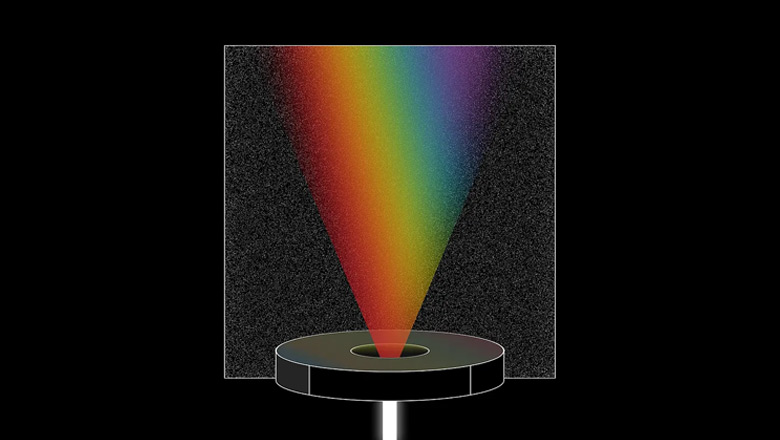

UI/UX的艺术与心理学：理解基本色彩理论
2025-09-12现在的创意人士或许难以想象一个没有基于光与美学科学的色彩理论的世界。事实上，如今对色彩理论的理解及对色彩的科学理解和创造性运用经历了几个世纪才最终形成。
什么是色彩理论？它为何对艺术家如此重要？
数千年来， 人们一直在思考和构建关于色彩的理论。从远古时代到文艺复兴时期，主流观点认为所有颜色都是由黑暗与光明、黑色与白色组成的。
例如，亚里士多德认为深红色是黑色与阳光或火光的混合。对于一个没有人工光源或色素分解技术的世界来说，这是一个可以理解的解释。

15世纪末，列奥纳多·达·芬奇探讨了某些颜色之间的对比，也就是我们现在所说的互补色。他还延续了长期以来人们认为四元素影响大多数系统的观点。达·芬奇提出了一个颜色等级体系，首先是代表土的白色和黄色，然后是代表水的绿色、代表空气的蓝色、代表火的红色，最后是黑色。
然而，到了 17 世纪，艾萨克·牛顿已经使用棱镜分离白光，并在几十年内制作出已知的第一个色轮。